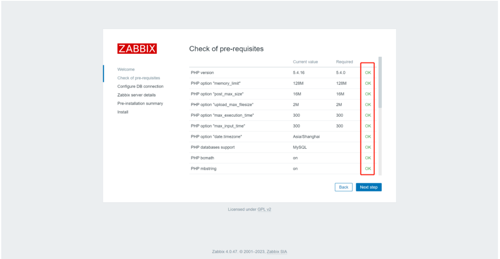
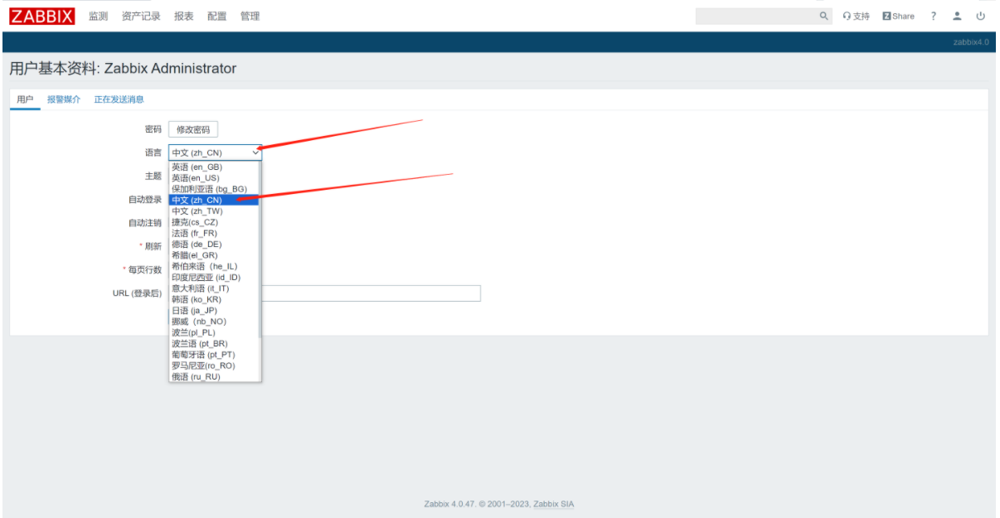
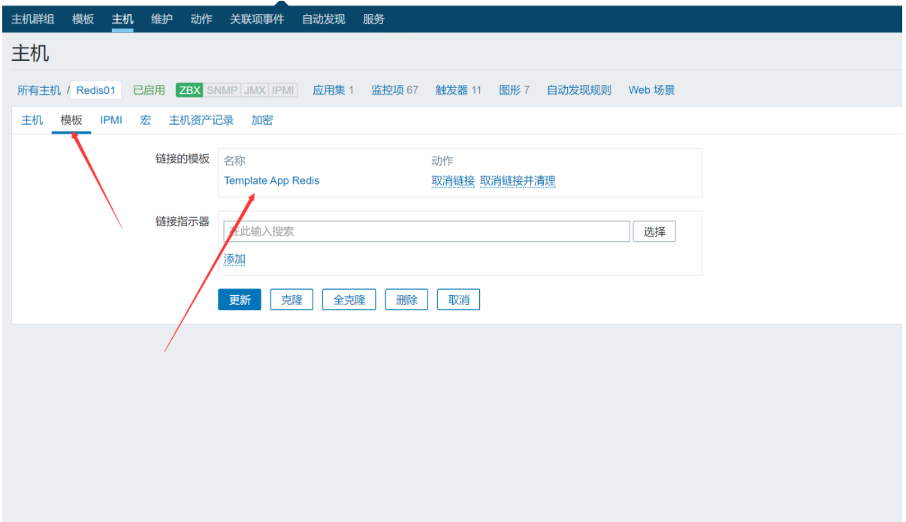
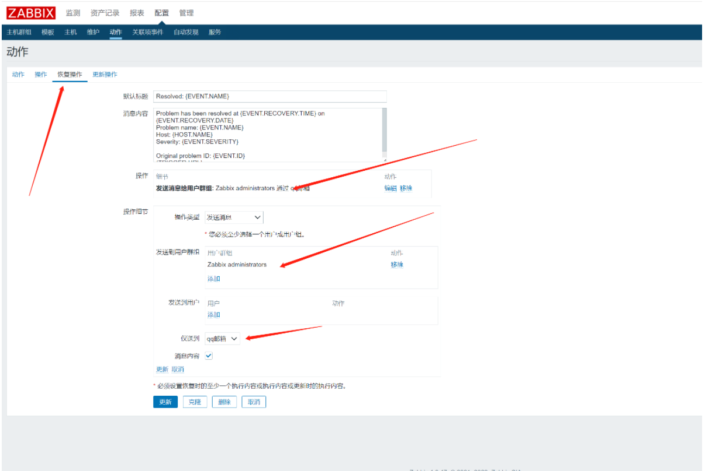
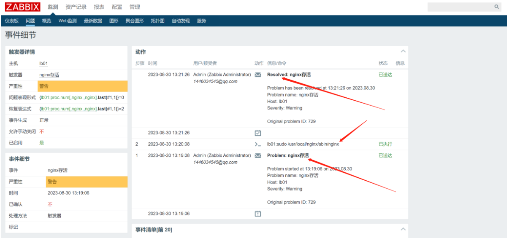
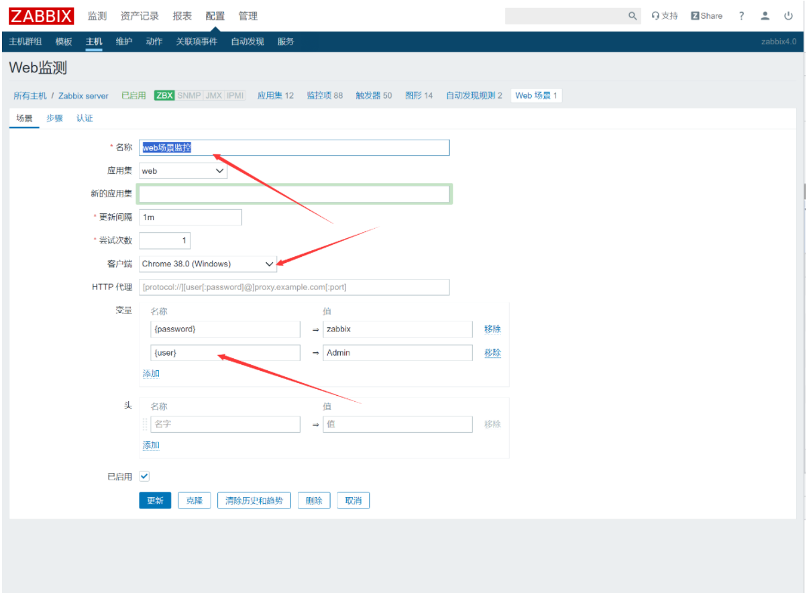
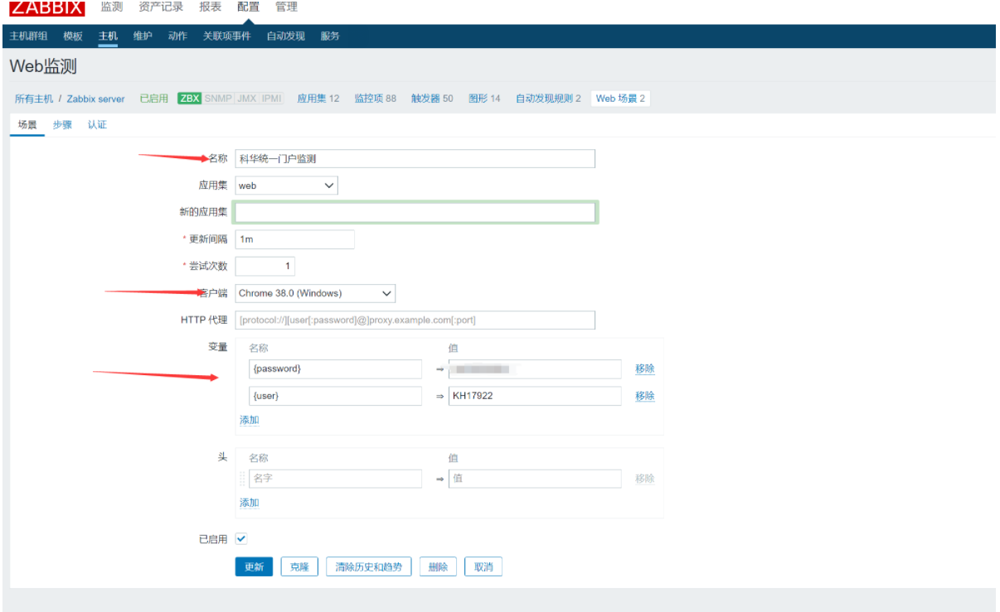

zabbix监控
1.zabbix-server安装
| Bash |
|---|
| yum install epel-release -y
getenforce
sed -i 's/SELINUX=.*/SELINUX=disables/' /etc/selinux/config && setenforce 0
systemctl stop firewalld && systemctl disable firewalld
wget https://repo.zabbix.com/zabbix/4.0/rhel/7/x86_64/zabbix-release-4.0-1.el7.noarch.rpm
rpm -ivh zabbix-release-4.0-1.el7.noarch.rpm
yum install mariadb-server mariadb zabbix-server-mysql zabbix-web-mysql -y
systemctl start mariadb && systemctl enable mariadb
mysql_secure_installation
#全选y password设置为root
mysql -u root -p
create database zabbix character set utf8 collate utf8_bin;
grant all privileges on zabbix.* to zabbix@localhost identified by 'zabbix';
#导入zabbix数据库
zcat /usr/share/doc./zabbix-server-mysql-4.0.47/create.sql.gz | mysql -uzabbix -p zabbix
vi /etc./zabbix./zabbix_server.conf
DBPassword=zabbix
vi /etc/httpd/conf.d./zabbix.conf
#第20行
php_value date.timezone Asia/Shanghai
systemctl start zabbix-server httpd && systemctl enable zabbix-server httpd
|



2.zabbix-agent安装
| Bash |
|---|
| yum install zabbix-agent -y
systemctl start zabbix-agent && systemctl enable zabbix-agent
|

3.中文设置

4.中文乱码
| Text Only |
|---|
| 使用windows电脑
win+r输入fonts
复制一个文件到服务器中
|
| Bash |
|---|
| #修改为ttf格式
mv simsun.ttc simsun.ttf
mv simsun.ttf /usr/share./zabbix/assets/fonts/simsun.ttf
vim /usr/share./zabbix/include/defines.inc.php
define('ZBX_GRAPH_FONT_NAME','simsun'); // font file name
#刷新网页
|

5.zabbix-agent节点安装
| Bash |
|---|
| wget http://repo.zabbix.com./zabbix/4.0/rhel/7/x86_64./zabbix-agent-4.0.47-1.el7.x86_64.rpm
rpm -ivh zabbix-agent-4.0.47-1.el7.x86_64.rpm
sed -i 's/SELINUX=.*/SELINUX=disables/' /etc/selinux/config && setenforce 0
vim /etc/zabbix/zabbix_agentd.conf
Server=192.168.107.199
ServerActive=192.168.107.199
Hostname=Tomcat01
vim /etc/zabbix/zabbix_agentd.conf
Server=192.168.107.199
ServerActive=192.168.107.199
Hostname=Tomcat02
vim /etc/zabbix/zabbix_agentd.conf
Server=192.168.107.199
ServerActive=192.168.107.199
Hostname=lb01
systemctl restart zabbix-agent
|
6.监控tomcat
| Bash |
|---|
| 添加zabbix存储库
rpm -ivh https://repo.zabbix.com/zabbix/4.2/rhel/7/x86_64/zabbix-release-4.2-1.el7.noarch.rpm
安装zabbix-java-getway （如果没有jdk，请先安装jdk）
yum -y install zabbix-java-gateway
修改配置文件（默认端口是10052，可根据服务器情况调整）
vim /etc/zabbix/zabbix_java_gateway.conf
启动zabbix-java-getway
systemctl start zabbix-java-gateway.service
开机启动
systemctl enable zabbix-java-gateway
查看java进程中是否有zabbix-java-getway的端口
netstat -lntp|grep java
vi /etc/zabbix/zabbix_java_gateway.conf #将以下内容取消注释并修改为如下
...
LISTEN_IP="0.0.0.0" #监控地址（默认地址）
LISTEN_PORT=10052 #监听端口
PID_FILE="/var/run/zabbix/zabbix_java.pid" #进程文件路径
START_POLLERS=5 #开启的工作进程数
...
vi /etc/zabbix/zabbix_server.conf #将以下内容取消注释并修改为如下(默认的情况下，zabbix server未启用javaPollers)
...
JavaGateway=127.0.0.1 #JavaGateway的地址（本机安装可使用127.0.0.1）
JavaGatewayPort=10052 #JavaGateway的端口号
StartJavaPollers=5 #开启的进程数量（大于客户端的数量）
...
systemctl restart zabbix-java-gateway
systemctl restart zabbix-server
|
| Bash |
|---|
| vi /app/tomcat/bin/catalina.sh #在开头添加以下配置
CATALINA_OPTS="-Dcom.sun.management.jmxremote -Dcom.sun.management.jmxremote.authenticate=false -Dcom.sun.management.jmxremote.ssl=false -Dcom.sun.management.jmxremote.port=12345 -Djava.rmi.server.hostname=192.168.107.200"
#-Djava.rmi.server.hostname=192.168.107.200 为tomcat所在主机ip
/app/tomcat/bin/shutdown.sh
/app/tomcat/bin/startup.sh
|

开启tomcat的gzip功能
| XML |
|---|
| vi /app/tomcat/conf/server.xml
在Connector节点中加上如下属性
compression=“on” 打开压缩功能
compressionMinSize=“50” 启用压缩的输出内容大小，默认为2KB
noCompressionUserAgents=“gozilla, traviata” 对于以下的浏览器，不启用压缩
compressableMimeType=“text/html,text/xml,text/javascript,text/css,text/plain” 哪些资源类型需要压缩
<Connector port="8080" protocol="HTTP/1.1"
connectionTimeout="20000"
redirectPort="8443"
maxParameterCount="1000"
compression="on"
compressionMinSize="2048"
noCompressionUserAgents="gozilla, traviata"
compressableMimeType="text/html,text/xml,text/javascript,application/javascript,text/css,text/plain,text/json"
/>
/app/tomcat/bin/shutdown.sh
/app/tomcat/bin/startup.sh
|
7.监控nginx
配置nginx的stub_status模块
| Bash |
|---|
| yum安装的nginx添加模块
/usr/local/nginx -V
cp -r /usr/local/nginx /usr/local/nginx_bak
wget http://nginx.org/download/nginx-1.24.0.tar.gz
tar -xzvf nginx-1.24.0.tar.gz -C /usr/local/
./configure --with-http_stub_status_module --prefix=/usr/local/nginx
make
make install
cp -rn /usr/local/nginx /usr/local/nginx_bak#复制新编译的文件到nginx目录下
mv /usr/local/nginx /usr/local/nginx_bak2
mv /usr/local/nginx_bak /usr/local/nginx#重命名nginx
[root@master local]# /usr/local/nginx/sbin/nginx -V
nginx version: nginx/1.24.0
built by gcc 4.8.5 20150623 (Red Hat 4.8.5-44) (GCC)
configure arguments: --with-http_stub_status_module --prefix=/usr/local/nginx
/usr/local/nginx/sbin/nginx
vi /usr/local/nginx/conf/nginx.conf
|
| Nginx Configuration File |
|---|
| default_type application/octet-stream;
sendfile on;
keepalive_timeout 65;
proxy_cache_path /opt/nginx/cache levels=1:2 keys_zone=one:10m;
upstream tomcat{
server 192.168.107.200:8080 weight=1;
server 192.168.107.201:8080 weight=1;
}
server {
listen 80;
server_name localhost;
location / {
proxy_pass http://tomcat;
proxy_http_version 1.1;
proxy_set_header Host $host;
proxy_set_header X-Real-IP $remote_addr;
}
location ~ .*\.(gif|jpg|png|css|js|woff|flv|ico|swf)(.*) {
proxy_cache one;
proxy_cache_key $uri;
proxy_cache_valid 200 302 1h;
proxy_cache_valid 301 1d;
proxy_cache_valid any 1m;
expires 30d;
add_header Nginx-Cache "$upstream_cache_status";
proxy_pass http://tomcat;
proxy_set_header Host $host;
proxy_set_header X-Real-IP $remote_addr;
}
location /status { #加上这个location模块
stub_status on;
access_log off;
allow 127.0.0.1;
allow 192.168.107.0/24;
deny all;
}
}
server {
listen 80;
server_name jeesns.liyedong.com;
location / {
proxy_http_version 1.1; #使用http1.1版本
proxy_pass http://tomcat;
proxy_set_header Host $host; #负载均衡以后继续传递host字段
proxy_set_header X-Real-IP $remote_addr; #传递真是ip
}
}
}
|
| Bash |
|---|
| /usr/local/nginx/sbin/nginx -s reload
curl localhost/status
Active connections: 3
server accepts handled requests
10 10 12
Reading: 0 Writing: 1 Waiting: 2
|
配置zabbix监控
| Bash |
|---|
| vi /etc/zabbix/zabbix_agentd.d/nginx_status.conf
UserParameter=Nginx.Active.Connections,/usr/bin/curl -s localhost/status 2>/dev/null |grep 'Active connections:'|awk '{print $NF}'
#在zabbix-server端
yum install zabbix-get -y
[root@master ~]# zabbix_get -s 192.168.107.202 -p 10050 -k "Nginx.Active.Connections"
1 #取值成功
|

| Bash |
|---|
| #监控Nginx活动连接数
UserParameter=Nginx.Active.Connections,/usr/bin/curl -s localhost/status 2>/dev/null |grep 'Active connections:'|awk '{print $NF}'
#监控Nginx总共处理的连接数
UserParameter=Nginx.Accepts.Connections,/usr/bin/curl -s localhost/status 2>/dev/null|sed -n '3p'|awk '{print $1}'
#监控Nginx成功创建的握手次数
UserParameter=Nginx.Handled.Connections,/usr/bin/curl -s localhost/status 2>/dev/null|sed -n '3p'|awk '{print $2}'
#监控Nginx总共处理的请求次数
UserParameter=Nginx.requests.Connections,/usr/bin/curl -s localhost/status 2>/dev/null|sed -n '3p'|awk '{print $3}'
#Nginx读取到客户端的连接数
UserParameter=Nginx.Reading,/usr/bin/curl -s localhost/status 2>/dev/null|sed -n '4p'|awk '{print $2}'
#Nginx响应数据到客户端的数量
UserParameter=Nginx.Writing,/usr/bin/curl -s localhost/status 2>/dev/null|sed -n '4p'|awk '{print $4}'
#Nginx处理完并等候状态的驻留连接
UserParameter=Nginx.Waiting,/usr/bin/curl -s localhost/status 2>/dev/null|sed -n '4p'|awk '{print $6}'
|

8.监控redis
| Bash |
|---|
| 关闭selinux
sed -i 's/SELINUX=.*/SELINUX=disables/' /etc/selinux/config && setenforce 0
getenforce
添加zabbix存储库
rpm -ivh http://repo.zabbix.com/zabbix/4.2/rhel/7/x86_64/zabbix-release-4.2-1.el7.noarch.rpm
yum install zabbix-agent -y
vi /etc/zabbix/zabbix_agentd.conf
Server=192.168.107.199
ServerActive=192.168.107.199
Hostname=Redis01
#host为主机名，需要和web界面名称一致 server和serveractive的ip都为zabbix-server端
systemctl start zabbix-agent
systemctl enable zabbix-agent
systemctl start redis
systemctl enable redis
|
| Bash |
|---|
| vi /etc/zabbix/zabbix_agentd.d/redis.conf
UserParameter=redis[*],redis-cli -h 127.0.0.1 -p 6379 -a redispwd --no-auth-warning info | grep $1":" | cut -d ':' -f 2
UserParameter=redis-ping,redis-cli -h 127.0.0.1 -p 6379 -a redispwd --no-auth-warning ping | grep -c PONG
UserParameter=redis.version, redis-server --version | cut -d " " -f 3 | cut -d "=" -f 2
systemctl restart zabbix-agent
|
Template App Redis.xml




9.监控对应服务进程
zabbix_get获取数据
zabbix监控可以使用默认自带的键值来监控服务进程存活，本文已时间服务器ntp进程为例，监控进程存活，理论适用于所有进程。
使用的键值proc.num[,,,]
格式说明：
:进程名字，默认为“all processes”
:运行该进程的用户，默认为“all users”
:进程状态，默认是all，可以进一步设定比如run,sleep等
:模糊匹配
请确保监控端已安装agent，请将192.168.x.x替换成你自己的客户端地址
1、在服务端执行
由于ntpd服务是通过nginx用户执行的，所以这里运行该进程的用户就填写nginx,进程名字也可以通过模糊搜索进行匹配
| Bash |
|---|
| [root@master ~]# zabbix_get -s 192.168.107.202 -k 'proc.num[,nginx,,nginx]'
2
nginx默认一个工作进程，开启缓存再加一个缓存进程，所以有两个
/usr/local/nginx/sbin/nginx -s stop
[root@master ~]# zabbix_get -s 192.168.107.202 -k 'proc.num[,nginx,,nginx]'
0
|
配置触发器
| Bash |
|---|
| /usr/local/nginx/sbin/nginx -s stop
|

| Bash |
|---|
| /usr/local/nginx/sbin/nginx
|

10.主动agent和被动agent
被动式agent识别
主动式agent识别
| Text Only |
|---|
| 明确设置Hostname
没有设置Hostname时使用HostnameItem
默认为system.hostname
|
Agent配置
| Text Only |
|---|
| StartAgents设置为0时，禁用被动式agent
注释掉ServerActive时，禁用主动式agent
同时禁用主动和被动模式的时候，agent会报错：
zabbix-agentd[16208]: ERROR: either active or passive checks must be enabled
|
12.触发器
什么是触发器
| Text Only |
|---|
| 触发器就是用监控项采集的数据来“评估”该监控项状态的逻辑表达式。
触发器表达式通过定义的阈值，和采集的数据进行比较，超出阀值时触发器会被触发。
例如：
CPU负载太高
主机用ICMP不可达
数据库宕机
应用没有运行... ...
|
| Text Only |
|---|
| 触发器的状态：
OK-一个正常的触发器状态。触发器表达式计算结果为假（False）
PROBLEM-发生了某些事情，状态异常，比如处理器的负载较高。触发器表达式计算结果为真（True）
UNKNOWN–通过表达式无法确定触发器的状态，通常是因为错误的数据造成
触发器的计算
每次Zabbix server接收到作为表达式一部分的监控项的新值时，都会重新计算触发器状态（表达式）
如果在表达式中使用基于时间的函数(nodata(), date(), dayofmonth(), dayofweek(),time(), now())，触发器就会由Zabbix history syncer进程每30秒重新计算一次
如果在表达式中同时使用基于时间和非基于时间的函数，当接收到一个新值和每隔30秒都会重新计算触发器的状态
|
13.zabbix设置QQ邮箱告警
获取授权码
首先在QQ邮箱中，开启POP3/SMTP服务 来获得授权码，QQ邮箱—>设置—>账户—>开启POP3/SMTP服务,获取授权码

准备重启脚本
| Bash |
|---|
| 为zabbix用户分配sudo权限
visudo
zabbix ALL=(ALL) NOPASSWD: ALL
vi /etc/zabbix/zabbix_agentd.conf
EnableRemoteCommands=1
#Defaults requiretty#这个注释掉
可以更精细化
或者
# visudo 添加：
Defaults:zabbix !requiretty
zabbix ALL=(ALL) NOPASSWD: /usr/bin/systemctl restart nginx
systemctl restart zabbix-agent
zabbix_get -s 192.168.107.202 -k "system.run[sudo /usr/local/nginx/sbin/nginx]"
zabbix_get -s 192.168.107.202 -k "system.run[sudo /usr/local/nginx/sbin/nginx -s stop]"
|

选择脚本重启时机

测试脚本和邮箱
| Text Only |
|---|
| /usr/local/nginx/sbin/nginx -s stop
|
测试邮箱成功

执行脚本成功，服务恢复

14.绘制动态拓补图
添加主机
选中两台主机相连，并且添加链接指示器，同时使用宏变量来进行对网卡出入口网速的检测

停止nginx服务，观察效果
| Text Only |
|---|
| /usr/local/nginx/sbin/nginx -s stop
|

测试成功

nginx自动重启脚本成功，告警恢复

15.低级发现规则

| Text Only |
|---|
| #server端进行测试
zabbix_get -s 192.168.107.202 -k vfs.fs.discovery
|
添加发现规则监控项原型

添加触发器原型
创建图形原型

检测效果


16.web场景监控
第一页的页面检测
| Text Only |
|---|
| 判断是否具有Zabbix SIA，其他字符串也是可以的
|

登录接口
| Text Only |
|---|
| 登录接口的地址为http://192.168.107.199/zabbix/index.php
请求的的数据类型为Formdata
参数有三个，分别是
name，password，enter
Admin，zabbix，Sign in
|

登录接口的检测
| Text Only |
|---|
| 登录成功后根据页面上有的字符串进行判断是否成功，这边选择“监测”这两个字
|
登出接口
| Text Only |
|---|
| 请求地址为http://192.168.107.199.zabbix/index.php
请求数据有两个，类型也有两个
第一个为query string parameters
实际上就是使用？跟着请求地址后面作为参数
另一个就是formdata与登录接口的数据格式一致
检测登出成功，就是返回首页，可以根据登录页的字符串来进行匹配，可以与第一个页面的检测配置一致，这边选择Username字符串作为监测字符串。
|

配置web监测

添加步骤1-页面访问

添加步骤2-登录
| Text Only |
|---|
| 根据对登录接口进行请求，来进行登录
由上面的接口分析得，请求数据为formdata
封装请求数据
根据请求成功返回的html文本流，匹配正则：regex:name="csrf-token" content="([0-9a-z]{16})"
获得sid，退出时需要使用
|
添加步骤3-登录检测

添加步骤4-登出

添加步骤5-登出检测
| Text Only |
|---|
| 根据登出后重定向的界面字符串进行匹配，可以跟第一步的字符串一致，这边选择Username这个字符串
|
查看数据

17.公司门户系统的检测
接口分析
| Text Only |
|---|
| 门户首页地址：http://portal.kehua.com/
登录接口地址：http://login.kehua.com:11502/cas/login，参数根据图分析得出
登录检测url：http://portal.kehua.com/web/guest/index
登出url：http://portal.kehua.com/c/portal/logout
登出检测：http://portal.kehua.com/
|


配置

步骤一
步骤二

步骤三

步骤四
步骤五
结果查看

18.配置zabbix proxy
zabbix-proxy端
| Bash |
|---|
| yum install epel-release -y
getenforce
sed -i 's/SELINUX=.*/SELINUX=disables/' /etc/selinux/config && setenforce 0
systemctl stop firewalld && systemctl disable firewalld
yum install wget -y
wget --no-check-certificate https://repo.zabbix.com/zabbix/4.0/rhel/7/x86_64/zabbix-release-4.0-1.el7.noarch.rpm
rpm -ivh zabbix-release-4.0-1.el7.noarch.rpm
yum install fping -y
yum install OpenIPMI-libs.x86_64 -y
yum install OpenIPMI-modalias.x86_64 -y
yum install zabbix-proxy-mysql -y
yum install mariadb-server -y
systemctl start mariadb.service
systemctl enable mariadb.service
mysql_secure_installation #安全初始化
mysql
create database zabbix_proxy character set utf8; #创建zabbix_proxy数据库
grant all on zabbix_proxy.* to zabbix@localhost identified by 'zabbix'; #授予zabbix用户本地密码登录的权限
flush privileges; #刷新权限
gunzip /usr/share/doc/zabbix-proxy-mysql-4.0.48/schema.sql.gz
mysql -uzabbix -pzabbix zabbix_proxy < /usr/share/doc/zabbix-proxy-mysql-4.0.48/schema.sql
vi /etc/zabbix/zabbix_proxy.conf
|
| Bash |
|---|
| Server=192.168.107.199 zabbix服务端的IP
ServerPort=10051 默认配置
Hostname=Zabbix-proxy 代理的名字，服务端的代理名字要和这里保持一致
LogFile= 日志目录默认
LogFileSize=0 指定日志输出级别默认
DBHost=localhost 数据库IP，如果在同一台机器就填localhost可以
DBName=zabbix_proxy 数据库名
DBUser=zabbix 数据库用户名
DBPassword=zabbix 数据库密码
DBSocket=/tmp/mariadb.sock socket文件
DBPort=3306 数据库连接端口
DataSenderFrequency=5 与zabbix服务端同步数据的时间间隔，这里设置为5秒
|
| Bash |
|---|
| #当agent端重启完后，代理端再重启，否则无法识别agent端的主机名
systemctl restart zabbix-proxy
|
zabbix-agent端
| Text Only |
|---|
| vi /etc/zabbix/zabbix_agentd.conf
|
| Bash |
|---|
| Server=192.168.107.198 #zabbix-proxy端IP
ServerActive=192.168.107.198 # zabbix-proxy端IP
Hostname=zabbix-proxy # 主机名，server的主机名要与这里配置一致
|
| Bash |
|---|
| systemctl restart zabbix-agent
|
zabbix-server